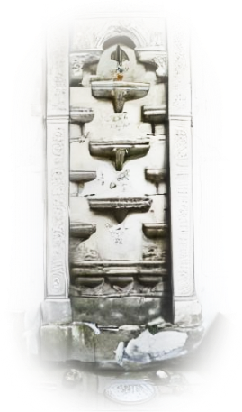
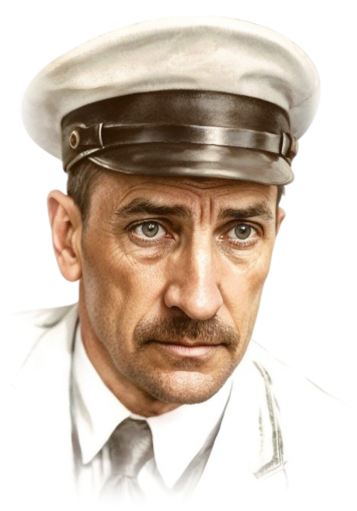
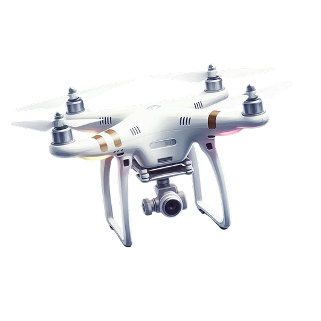
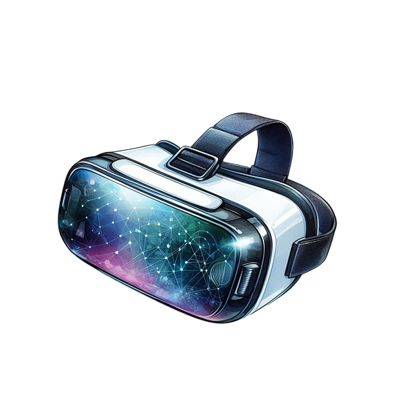

Добро пожаловать
В КРЫМ
Крым — это море, горы и истории, которые оживают! Погрузитесь в прошлое и загляните в будущее удивительного полуострова.
Крым — это море, горы и истории, которые оживают! Погрузитесь в прошлое и загляните в будущее удивительного полуострова.
от великих мест до великой поэзии
ИСТОРИЯ КРЫМА
Крым — это место, где жили древние греки, татары, генуэзцы и множество других культур. От Херсонеса до Ханского дворца — каждое место хранит легенды, а поэты и писатели вдохновлялись его красотой!
АЛЕКСНДР СЕРГЕЕВИЧ ПУШКНИН
магия Бахчисарая
Александр Сергеевич Пушкин, великий русский поэт, в 1820 году посетил Крым и был очарован Бахчисараем. Фонтан слёз в ханском дворце вдохновил его на создание поэмы «Бахчисарайский фонтан».



Александр степанович Грин
МЕЧТЫ МОРЯ
Александр Грин, романтик и писатель, жил в Крыму с 1924 года. Его сказочная повесть «Алые паруса» родилась из мечты о любви и приключениях, вдохновлённых крымским морем. Писал в Феодосии и Старом Крыму, найдя там вдохновение.

Херсонес
Таврический
Основан греками из Гераклеи Понтийской около 528 года до н. э. на юго-западе Крыма. Этот полис был демократической республикой с народным собранием, торговал с греческими городами и скифами, выращивая виноград и зерно.

Ласточкино
Гнездо
Небольшой замок, построенный в 1912 году на отвесной скале Авроры недалеко от Ялты, стал символом Крыма.

Ханский
дворец
Построен в XV веке как резиденция крымских ханов в Бахчисарае. Этот уникальный памятник восточной архитектуры включал мечети, гарем и фонтаны, включая Фонтан слёз, вдохновивший Пушкина.
Мечты и технологии
Крым будущего
Представь Крым через 50 лет: чистое море, зелёные города и умные роботы, которые станут твоими гидами! С помощью виртуальной реальности ты сможешь путешествовать по Крыму, не выходя из дома, и даже строить свои мечты о будущем полуострова.

Эко-города
Будущие города Крыма будут расти вверх с зелёными крышами, где растут фрукты и овощи, а улицы украсят солнечные панели и ветряки. Дома станут умными: они сами регулируют свет и тепло, экономя энергию.
Роботы-гиды
Маленькие роботы на колёсах или летающие дроны будут водить туристов по Ялте, Севастополю и Ай-Петри. Они расскажут легенды на любом языке, покажут скрытые тропы и даже помогут найти редкие растения. Некоторые роботы смогут рисовать акварели на месте или петь песни о Крыме, превращая прогулки в приключение!

Виртуальная реальность
Надень очки VR, и ты окажешься в будущем Крыму: прогуливайся по голографическим улицам Ялты, ныряй в море с дельфинами или исследуй подводные города. Школы будут учить истории Крыма через виртуальные экскурсии в Херсонес или ханский дворец!